The goal of theme.usq is to provide University of Southern Queensland (USQ) staff and students a quick and easy way to apply USQ colours and typography to graphs created in R using the base graphics package or ggplot2 while providing clear graphs for reports and presentations. All of the colours provided are defined in USQ’s Visual Identity Colour Palette, but do not all appear in the same order to maintain usability for the purposes of graphing.
This package has been tested on macOS, Ubuntu Linux and USQ computers using Windows 7. For Linux users, if you have not installed the MS Core Fonts, you will need to do that for this package to function properly and generate the graphs with the proper typography. Windows and macOS users should be ready to go with just the installation of this package.
If you do not already have R installed, because theme.usq is an R package, you will need to install R first. Download and install the proper version for your computer from CRAN. It is also suggested to have RStudio installed as well. You can download the proper installation file from https://www.rstudio.com/products/rstudio/download/ for your platform.
Once R and RStudio are set up, you’re ready to install theme.usq through an R session.
The theme.usq package is only available from GitHub. The easiest way to install it is by using the devtools package.
The installation may take some time as some system fonts need to be catalogued to use the Microsoft Verdana font that USQ suggests. Once the installation is complete, it should not be necessary to re-catalogue the fonts so loading theme.usq will not take any longer than expected.
To install theme.usq, copy/paste the code in the following code block.
if(!require(devtools)){
install.packages("devtools")
library(devtools)
}
install_github("adamhsparks/theme.usq", dependencies = TRUE)
library("ggplot2")
library("theme.usq")Since theme.usq is still under development with bug fixes and new features being added and it is not available from CRAN; update.packages() will not update it. To keep theme.usq updated, use:
devtools::update_packages("theme.usq")To view a list of named colours in this package, simply type:
usq_colours
#> usq yellow usq charcoal secondary yellow secondary orange
#> "#ffd100" "#1e1e1e" "#fdba12" "#faa61a"
#> cool gray dark warm gray light_warm gray support orange
#> "#76848f" "#aca095" "#efe9e5" "#f58220"
#> support red support magenta support green support blue
#> "#e63e30" "#b63393" "#63a945" "#0090ba"
#> support navy support purple support turquiose light grey
#> "#003d77" "#6a288a" "#46c1be" "#f6f6f6"
#> medium grey dark grey
#> "#e5e5e5" "#333333"The resulting list shows the hexadecimal colour, e.g. “#ffd100”, and it’s name, “usq yellow”. The names may be used to specify the colours at any time when plotting.
Colours are grouped into convenient palettes as well. The palettes may be used when plotting. To see the palettes and colours included in each of them, simply type:
usq_palettes
#> $primary
#> usq yellow usq charcoal secondary yellow secondary orange
#> "#ffd100" "#1e1e1e" "#fdba12" "#faa61a"
#> cool gray dark warm gray
#> "#76848f" "#aca095"
#>
#> $`primary dark`
#> usq charcoal cool gray dark warm gray
#> "#1e1e1e" "#76848f" "#aca095"
#>
#> $`primary light`
#> usq yellow secondary yellow secondary orange
#> "#ffd100" "#fdba12" "#faa61a"
#>
#> $cool
#> support navy support blue support turquiose
#> "#003d77" "#0090ba" "#46c1be"
#>
#> $warm
#> support red support orange secondary orange secondary yellow
#> "#e63e30" "#f58220" "#faa61a" "#fdba12"
#> usq yellow
#> "#ffd100"
#>
#> $bright
#> support navy support blue support turquiose support green
#> "#003d77" "#0090ba" "#46c1be" "#63a945"
#> usq yellow secondary yellow secondary orange support orange
#> "#ffd100" "#fdba12" "#faa61a" "#f58220"
#> support red support magenta support purple
#> "#e63e30" "#b63393" "#6a288a"
#>
#> $digital
#> light grey medium grey dark grey
#> "#f6f6f6" "#e5e5e5" "#333333"Following are a few examples of theme.usq's capabilities.
plot_usq()
Plot plot car weights by miles per gallon.
plot_usq(x = mtcars$wt, y = mtcars$mpg)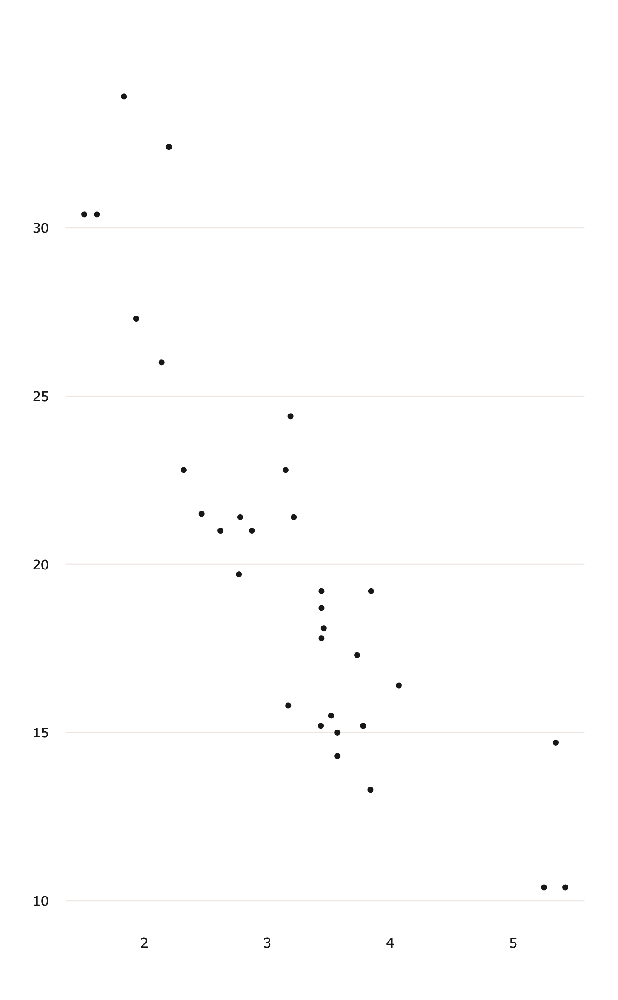
theme_usq()
Plot car weights by miles per gallon and facet by Transmission (0 = automatic, 1 = manual) using the scale_colour_usq() setting discrete = TRUE and using the cool palette to use blue USQ colours for the plot.
p1 <- ggplot(mtcars) +
geom_point(aes(
x = wt,
y = mpg,
colour = factor(gear)
)) +
scale_colour_usq(discrete = TRUE,
palette = "cool") +
facet_wrap(~ am)
p1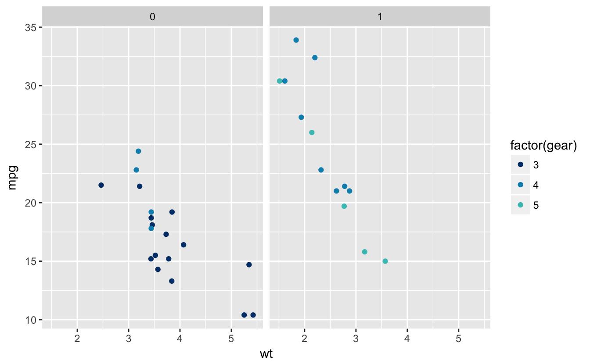
Now add the theme_usq() to the graph.
p1 + theme_usq()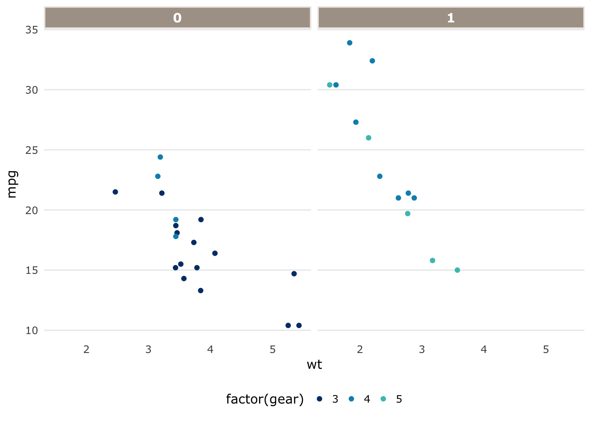
Using the theme.usq's theme_usq() for ggplot2, plot values using the scale_fill_usq() to use USQ colours for continuous values in the graph.
p2a <- ggplot(faithfuld, aes(waiting, eruptions)) +
geom_raster(aes(fill = density),
interpolate = TRUE) +
scale_fill_usq("warm",
discrete = FALSE) +
theme_usq()
p2a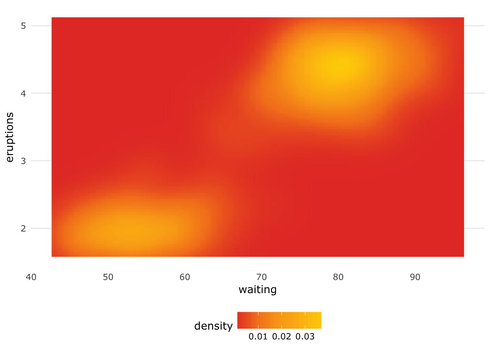
p2b <- ggplot(faithfuld, aes(waiting, eruptions)) +
geom_raster(aes(fill = density),
interpolate = TRUE) +
scale_fill_usq("cool",
discrete = FALSE) +
theme_usq()
p2b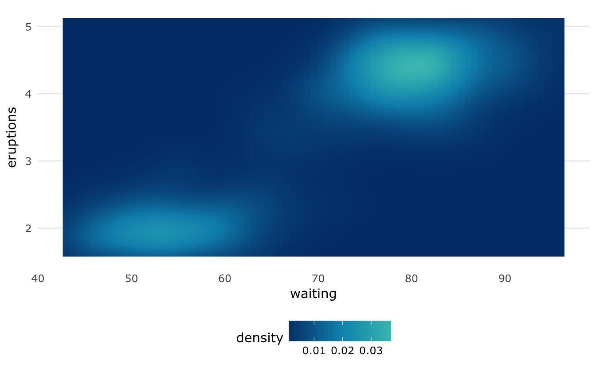
theme_usq()
theme_usq() can be used with any colour palette that you wish to use, while still applying the graph styling and typography to the graph.
Use the default ggplot2 colour scheme to fill the density plot while using the theme_usq() to theme the graph.
p3 <- ggplot(faithfuld, aes(waiting, eruptions)) +
geom_raster(aes(fill = density), interpolate = TRUE) +
theme_usq()
p3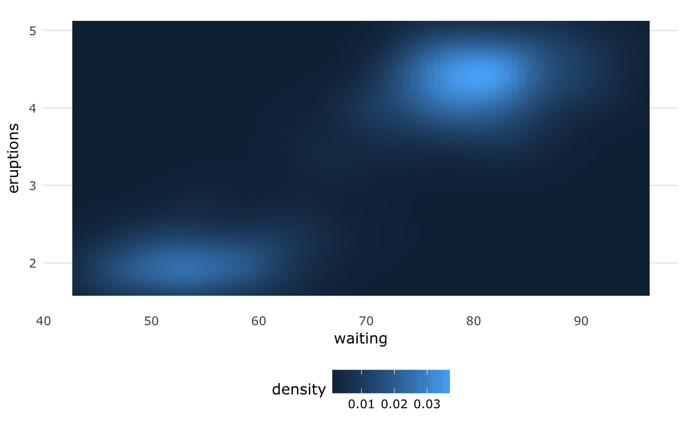
hist_usq()
hist_usq(diamonds$carat)theme_usq()
p4 <- ggplot(diamonds, aes(carat)) +
geom_histogram(fill = usq_cols("usq charcoal")) +
theme_usq()
p4
#> `stat_bin()` using `bins = 30`. Pick better value with `binwidth`.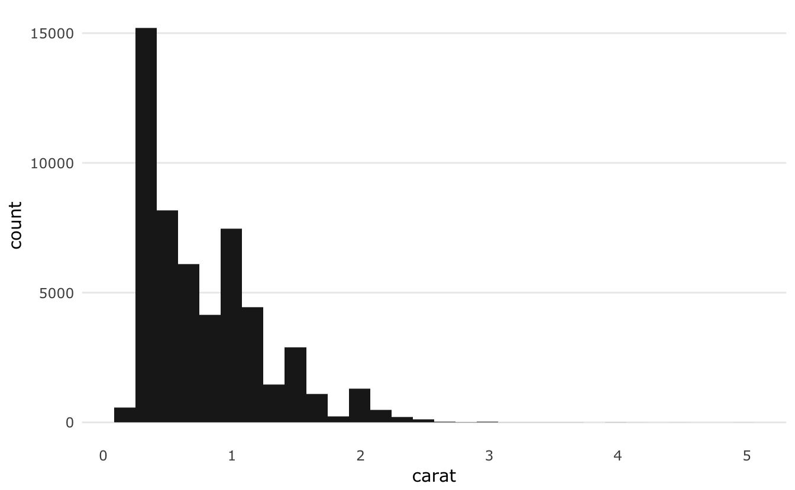
boxplot_usq()
Plot the highway miles per gallon (mpg) of 38 popular car models in the US by class of car.
boxplot_usq(mpg$hwy ~ mpg$class)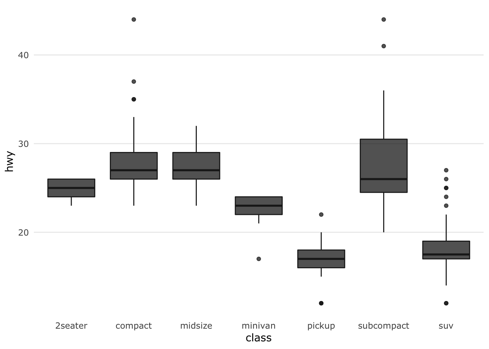
theme_usq()
p5 <- ggplot(mpg, aes(class, hwy)) +
geom_boxplot(alpha = 0.75,
fill = usq_cols("usq charcoal"),
colour = usq_cols("usq charcoal")) +
theme_usq()
p5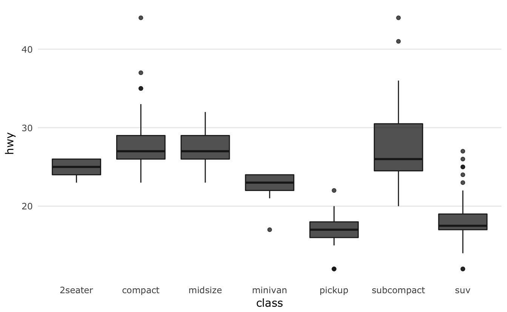
Use the USQ colours to fill the box-plots while using drv (e.g., 4-wheel drive, front-wheel drive or rear-wheel drive) for the box-plot colour.
p5.1 <- ggplot(mpg, aes(class, hwy)) +
geom_boxplot(aes(fill = drv),
colour = usq_cols("usq charcoal")) +
scale_fill_usq("primary") +
theme_usq()
p5.1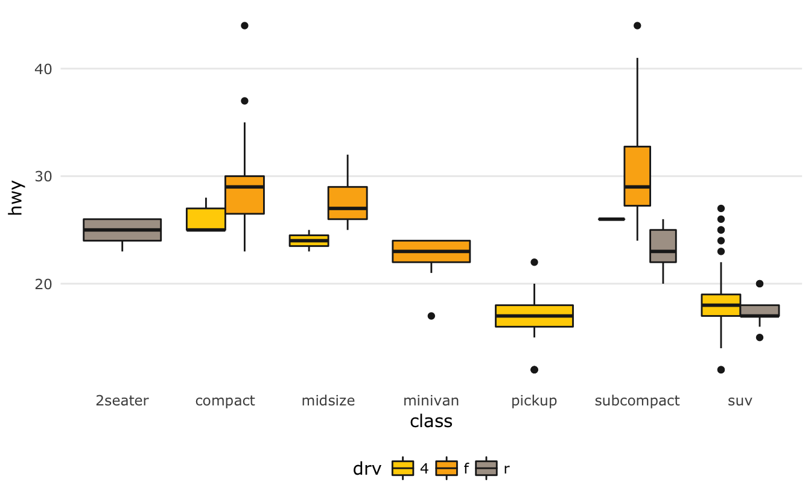
theme_usq() to plot timeseries lines usingdiscrete colours for each variable of interest. While possible to do with base R graphics, ggplot2 simplifies the process greatly, so it is the only example provided and suggested for use.
p6 <- ggplot(economics_long, aes(date, value01, colour = variable)) +
geom_line() +
scale_colour_usq("bright") +
theme_usq()
p6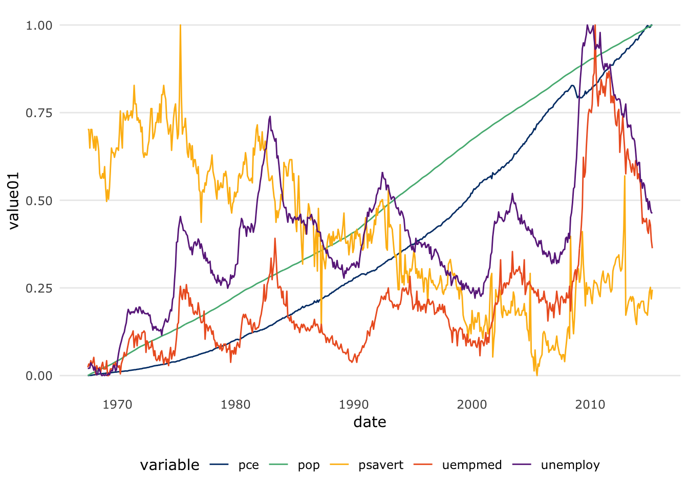
barplot_usq()
Plot the areas in thousands of square miles of landmasses which exceed 10,000 sqm.
barplot_usq(islands, col = "cool gray")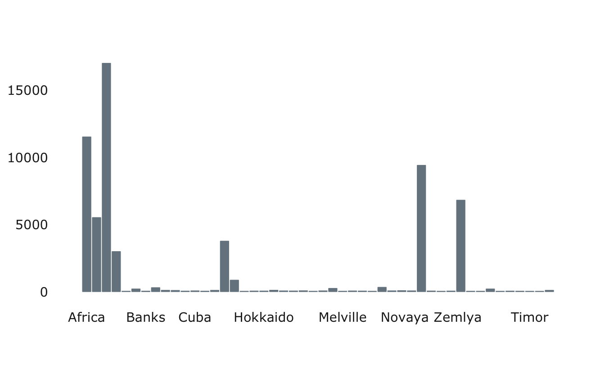
theme_usq()
Plot the areas in thousands of square miles of landmasses which exceed 10,000 sqm.
library(tibble)
islands_df <- as.data.frame(islands)
islands_df <- rownames_to_column(islands_df, "name")
ggplot(islands_df, aes(x = name, y = islands)) +
geom_bar(stat = "identity",
colour = usq_cols("cool gray"),
fill = usq_cols("cool gray")) +
theme_usq() +
theme(axis.text.x = element_text(angle = 45, hjust = 1))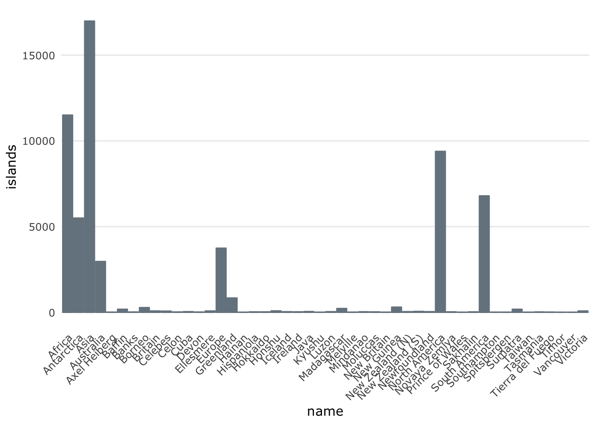
Plot the number of cars from each manufacturer in the mpg() dataset.
ggplot(mpg, aes(manufacturer, fill = manufacturer)) +
geom_bar() +
scale_fill_usq(palette = "bright", guide = "none") +
theme_usq() +
theme(axis.text.x = element_text(angle = 45, hjust = 1))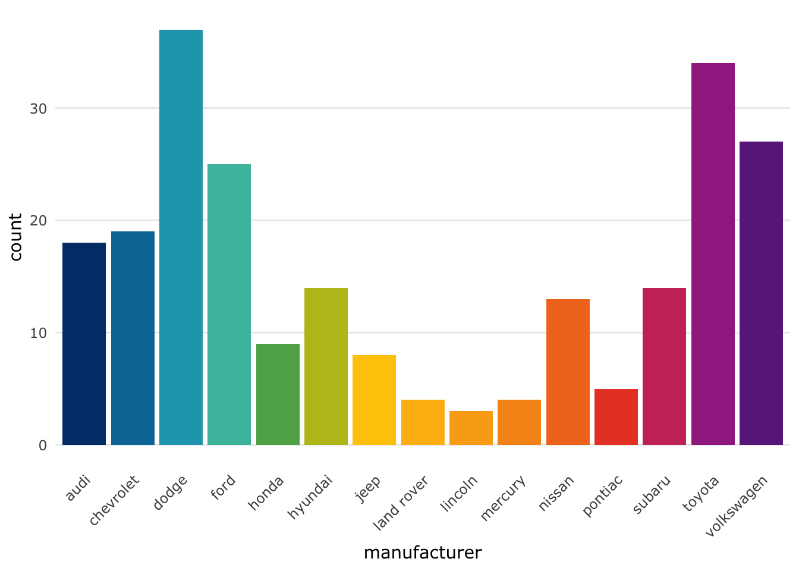
The default settings for theme_usq() are fine for printed materials such as reports, but if you wish to use it in a presentation you can use the ggplot2 option base_size = to increase the size of the fonts, points and lines in the graphs.
As an example, using base_size = 24 helps ensure that the graphs are legible on a standard sized PowerPoint slide when exported at a size of 33.87mm x 19.05mm, using ggsave(), for a 16x9 presentation slide that fills the whole slide.
p8 <- ggplot(mpg, aes(class, hwy)) +
geom_boxplot(fill = usq_cols("usq charcoal"),
colour = usq_palette("usq charcoal"),
alpha = 0.75) +
theme_usq(base_size = 24) +
theme(axis.text.x = element_text(angle = 45, hjust = 1))
ggsave("slide_p7.png", width = 33.87, height = 19.05, units = "cm",
dpi = 150)